Conceptual Framework¶
In this chapter, we provide a unified view of the rule learning algorithms that are provided by this project. In the past, a large number of publications have been devoted to using rule learning methods for tackling different types of machine learning problems. Based on the outcome of these studies, we argue that rules enable to model data naturally and are a versatile tool for building classification and regression models that are specifically tailored to different use cases and requirements. Despite the varying characteristics of existing rule learning approaches, the methodologies and algorithms used for inducing rules tend to share many of the underlying ideas and techniques. Based on this observation, we identify the algorithmic aspects that are essential to all rule-based machine learning methods and integrate them into a consistent and modular framework. Not only can existing rule learning methods be viewed as instantiations of this framework, but it may also serve as a basis for designing new rule learning algorithms.
Multi-output Rules¶
Following the notion of rules traditionally used in classification, i.e., for tackling binary or multi-class classification problems, we aim to model data by learning predictive rules of the form
The body of a rule consists of one or several conditions that specify the examples to which the rule applies, and the head provides a prediction for these covered examples. Each condition refers to one of the attributes in a dataset. Such a condition \(c_l\) compares an example’s value for the \(l\)-th attribute to a constant using a relational operator, such as \(=\) and \(\neq\), if the attribute \(A_l\) is nominal, or \(\leq\) and \(>\), if the attribute is numerical or ordinal.
When dealing with multi-output classification or regression tasks, a variety of options exist when it comes to the heads of rules. Whereas single-label rules must assign a prediction to the only available output, the heads of multi-output rules may comprise information for more than a single output. The following table shows examples of different types of rules.
Head type |
Example |
|---|---|
Single-output head |
\(\hat{p}_1 \leftarrow c_1 \wedge c_2\) |
Partial multi-output head |
\(\hat{p}_1, \hat{p}_2 \leftarrow c_1 \wedge c_2\) |
Complete multi-output head |
\(\hat{p}_1, \neg \hat{p}_2, \neg \hat{p}_3, \dots, \hat{p}_K \leftarrow c_1 \wedge c_2\) |
In the following, we recapitulate the terminology proposed by Loza Mencía, Fürnkranz, et al.[1] to distinguish between various forms of multi-output rules. In addition, we outline some of the most relevant methods that have been investigated in the literature to learn such rules and discuss to which extent they are suited to express the different types of dependencies between outputs that may be hidden in multi-output data.
Deterministic vs. Probabilistic¶
We distinguish between deterministic and probabilistic predictions. On the one hand, the former is often preferred when simple and interpretable classification models are needed. In such a case, the heads of rules assign binary values \(\hat{𝑝}_𝑘 \in \{0, 1\}\) to the \(𝑘\)-th label to indicate whether it is relevant (\(\hat{𝑝}_𝑘 = 1\)) or irrelevant (\(\hat{𝑝}_𝑘 = 0\)) to the covered examples. For brevity, we use the shorthand notation \(\hat{𝑝}_𝑘\) and \(\neg \hat{p}_𝑘\) to denote binary predictions that indicate the relevance and irrelevance of a label, respectively. Rules of this type are used by our SeCo algorithm. On the other hand, classification rules with probabilistic predictions provide information about the distribution of labels in a dataset, most commonly given in the form of real-valued scores \(\hat{𝑝}_𝑘 \in \mathbb{R}\). Such scores express a preference for predicting an individual label as relevant or irrelevant. This representation is natural when using statistical optimization techniques for solving classification problems. It is also suitable for use in regression problems, where the regression score predicted for an example results from summing up the real-valued scores of individual rules covering the example. Probabilistic rules form the basis of the classification or regression models that are learned by the boosting-based BOOMER algorithm.
Multi-output Heads¶
The different types of rules discussed so far focus on the prediction for a single output. We refer to the heads of such rules as single-output heads. Alternatively, in a multi-output setting, the construction of multi-output heads, which predict for several outputs simultaneously, enables to model dependencies between these outputs. We characterize multi-output heads that are concerned with a subset of the available outputs as partial. In contrast, complete heads provide a prediction for each of the available outputs.
In particular, in a multi-label classification setting, multi-output heads are a natural choice for the representation of co-occurrences of labels that hold for certain regions of the feature space. This pattern, frequently found in multi-label data, can easily be modeled by rules such as \(\hat{𝑝}_1, \hat{𝑝}_2 \leftarrow 𝑐_1\). Accordingly, local exclusions of labels can also be expressed through multi-label heads, e.g., by learning rules of the form \(\hat{𝑝}_1, \neg \hat{𝑝}_2 \leftarrow 𝑐_1\). The induction of binary multi-output heads is often implemented as a post-processing step. For example, they can be constructed from association rules by merging the single-output heads of rules that cover overlapping regions of the feature space.[2][3][4] In contrast, our algorithms support the native induction of rules with multiple predictions in the head. However, naive implementations of such an approach can be computationally expensive, as the number of output combinations that must be considered for each rule grows exponentially with the number of available outputs. To overcome this limitation, pruning techniques that enable to omit unpromising solutions, rather than taking all possible combinations of outputs into account, have been proposed.[1][5] They are also used by our SeCo algorithm.
Assemblage of Rule Models¶
We aim at learning predictive models that consist of several (multi-output) rules. Without loss of generality, we assume that the rules are given in a particular order. This enables us to account for methods where the prediction for unseen examples depends on the order of the rules, as is the case with covering algorithms. We denote a rule-based model, consisting of \(T\) rules, as a sequence
All rules in a model are usually of the same form. For example, an algorithm that aims at the induction of probabilistic single-output rules does typically not produce rules that provide deterministic predictions or are concerned with more than a single output.
Default Rules¶
Unlike decision trees, which cover the entire feature space (see here), individual rules only provide predictions for a particular region of the feature space for which the conditions in their bodies are satisfied. Rule-based models typically include a default rule to account for cases where no other rule does cover an example. It does not contain any conditions in its body and covers all examples for which a model may predict.
The predictions of a default rule may be deterministic or probabilistic (see here), depending on the type of predictions provided by the other rules in the model. However, a default rule is always supposed to predict for all available labels, regardless of whether the other rules provide partial or complete predictions. The SeCo algorithm employs binary default rules that predict a label as irrelevant unless most training examples are associated with the respective label.[5][6] In cases like these, where the order of the rules matters for prediction, the default rule comes last, i.e., the other rules take precedence.
Sequential Rule Induction¶
We induce the rules to be included in a model using an iterative algorithm, where new rules are learned with respect to their predecessors. The assemblage of a model starts with the induction of a default rule. It applies to all examples, regardless of the region in the feature space they belong to. The following rules should focus on subspaces that the preceding rules do not yet handle accurately. They are constructed by following a sequential procedure. For the induction of a single rule, the following aspects must be taken into account:
Stopping Criterion: The number of rules included in a model is controlled by one or several stopping criteria. If at least one criterion is satisfied, the rule induction process is stopped rather than learning a new rule. Empirical studies have shown that the predictive performance may suffer from too many rules being included, which introduces the risk of fitting noise in the data.[7] This shows the demand for stopping criteria that are effective in preventing overfitting.[8] A straightforward implementation of such a criterion is based on counting the number of rules induced so far. If the model’s size has reached a predefined number of rules, the induction of rules is put to an end. Another simple criterion supported by our algorithms, which may help preventing overly long training times, stops the induction of new rules after a specific amount of time.
Global Pruning: As more elaborated alternatives to the rather rigid stopping criteria mentioned above, our algorithms support different pruning strategies. Pre-pruning, as it is often employed by boosting algorithms, may be used. It is based on keeping track of a model’s performance on an otherwise unused portion of the training data and terminates the training process as soon as the performance stagnates or declines. While this strategy may be effective in preventing overfitting and also reduces training times, it comes at the risk of stopping to early if the method’s hyperparameters are not chosen appropriately. Post-pruning does not come with this risk, as it carries out the full training procedure until a stopping criterion is met. However, it keeps track of the number of rules that perform best on a holdout set and removes superfluous rules once training has finished. In this way, it does not provide any benefits in terms of training speed, but reliably results in high-performing models free from overfitting.
Rule Induction: Learning a new rule requires determining a certain region in feature space to be covered by the rule and choosing the conditions in its body accordingly. There is typically a trade-off between the coverage and consistency of a rule. The former corresponds to the size of the covered region, whereas the latter refers to the fraction of examples within the covered subspace for which a rule’s predictions are correct.[7][9] The predictions assigned by a rule’s head should be chosen with regard to the covered examples. If partial heads are desired, it is necessary to decide on a fraction of the outputs to predict for.
The following UML sequence diagram provides a high-level overview of the interactions between the components involved in the induction of a rule-based model. The feature values of the training examples \(X\) and their ground truth \(Y\) are provided as the input to the algorithm. Individual rules are learned with respect to statistics \(S\) that incorporate information about the ground truth of individual examples and the corresponding predictions of the current model. The loop that is responsible for learning new rules is exited as soon as a certain stopping criterion is met.
{kind=link}
{kind=link}
Post-Optimization¶
An optional post-processing step may be conducted after the induction of new rules has stopped. Initially, at each iteration of the rule induction process, information about the current model is taken into account to construct a new rule. However, only after the rule induction has been completed, the model’s performance can be verified as a whole. Consequently, this last stage of training enables to carry out optimizations that aim at fine-tuning a model globally. This may include the removal or addition of entire rules, as well as modifications to existing ones. Our algorithms support the post-optimization strategy, successfully employed by RIPPER[10], where individual rules are relearned in the context of all preceding and following rules.
Induction of Single Rules¶
At the core of the rule learning framework presented here are the algorithmic components responsible for the induction of individual rules, including the default rule. As outlined by Hüllermeier, Fürnkranz, et al. (2020)[11], constructing a rule requires identifying the conditions that should be included in its body. We discuss this aspect in the section Candidate Generation below. The conditions in a rule’s body specify the region in the feature space covered by the rule. The search for suitable conditions can be omitted when learning a default rule, as it does not contain any conditions in its body. In addition, the head of a rule must be found, as discussed in the section Evaluation of Candidates. The predictions it provides for individual outputs should be chosen with regard to the covered region, such that the rule predicts accurately for the covered training examples.
The following UML sequence diagram illustrates the individual steps that are necessary for inducing a single rule. A rule can be learned on a subset of the training examples, which is specified by assigning weights \(w\) to individual examples. The predictions of a rule may be restricted to a subset of the outputs \(\mathcal{L}\). The search for the best rule \(f\) requires to enumerate the candidate bodies that may be used by potential rules. For each body, a corresponding head must be found. Its predictions for individual outputs depend on statistics \(S'\) corresponding to the examples that are covered by the rule’s body. The quality of potential rules is assessed in terms of numerical scores \(q\).
{kind=link}
{kind=link}
Output Space Statistics¶
We rely on so-called output space statistics, often abbreviated as statistics, as the basis for learning rules. They incorporate information about the ground truth of individual training examples and the corresponding predictions of the rules that have already been induced until a particular iteration of the sequential rule induction process. The semantics of the statistics may vary depending on the type of algorithm used. For example, the SeCo algorithm characterizes the predictions for individual examples and labels in terms of confusion matrix elements, i.e., they differentiate between true positives, false positives, true negatives, and false negatives, based on the ground truth and the predictions a model provides. Furthermore, maintaining binary or real-valued weights enables tracking whether individual labels of the training examples have already been covered in previous iterations of the SeCo algorithm. In contrast, the BOOMER algorithm relies on gradients that indicate whether a model provides accurate predictions regarding a particular loss function or if the predictions leave room for improvement. Depending on the target measure the algorithm should address, the statistics for individual examples must not necessarily be associated with individual outputs but may also correspond to pairs of outputs. As new rules alter the predictions for training examples they cover, the corresponding statistics must be updated when a new rule is added.
Candidate Generation¶
The induction of an individual rule requires making up candidates that can be added to an existing model. The number of candidates that are considered when searching for a new rule is usually large and substantially exceeds the size of the model that is eventually produced. In general, different strategies for the generation of potential rules are conceivable. The size of the search space, i.e., the number of rules that can be constructed, is typically immense. Rather than employing an exhaustive search, algorithms for rule induction are typically guided by heuristics or rely on theoretical guarantees to focus on the most promising candidates while pruning large regions of the search space. The quality of potential rules must be assessed and compared to each other to decide which one results in the greatest improvement when added to a model.
Instance Sampling¶
The number of possible candidates heavily depends on the dimensionality of the feature space. The bodies of candidate rules are usually constructed from the feature values of the available training examples, which are provided as a two-dimensional feature matrix \(X \in \mathbb{R}^{N \times L}\). A subset of the training examples can optionally be selected via instance sampling to reduce the impact a large number of training examples has on the complexity of a rule learning algorithm. We represent a subset that results from such a sampling scheme in terms of a weight vector \(\boldsymbol{w} \in \mathcal{R}^N\), where each element \(𝑤_n \in \boldsymbol{w}\) assigns a real-valued weight to the corresponding example \(\boldsymbol{x}_n\). On the one hand, if \(w_n = 0\), the rule induction algorithm ignores the corresponding example. We refer to such examples as out-of-sample. On the other hand, if \(w_n > 0\), the corresponding example is included in the sample used for the construction of candidate rules. Rules are obliged to predict accurately for examples with larger weights, as they are considered more important than examples with smaller weights. If no sampling scheme is used, all examples are weighted equally, i.e., \(w_n = 1, \forall 1 \leq n \leq N\). All candidate rules are constructed with respect to the same weights to ensure that they are comparable to each other. Different sampling methods can be used for dimensionality reduction and ensuring diversity within a model.[12][13] The out-of-sample examples that result from applying a sampling method can also be helpful to obtain an unbiased estimate of a rule’s quality on independent training examples that have not been used to construct the rule.
Feature Sampling¶
As the possible conditions of candidate rules result from the features present in a dataset, the computational demands of searching for rules increase with the number of available features. To reduce the computational burdens that come with many features, our algorithms allow to use feature sampling. When using this method, a subset of the available features is randomly selected whenever a new condition should be added to a candidate rule. If not specified otherwise, the number of features to be included in a sample is calculated as \(\log(L - 1) + 1\), where \(L\) corresponds the total number of features.
Output Sampling¶
Unlike in single-output problems like binary or multi-class classification, where each example is always associated with exactly one class, the dimensionality of the output space may vastly differ in different applications of multi-output classification or regression. By default, our algorithms have access to information about the entire output space. It is given as a ground truth matrix \(Y \in \{ 0, 1 \}^{𝑁 \times 𝐾}\), which stores the ground truth of all available training examples. Inducing a new rule requires selecting the outputs it should predict for and deciding on the predictions that should be assigned to these outputs by its head. Consequently, the complexity of the rule induction algorithm is directly affected by the number of outputs in a dataset. A subset of the available outputs can optionally be selected via output sampling to overcome the computational demands that result from a high-dimensional output space. We denote the set of outputs that must be taken into account for generating candidate rules as \(\mathcal{L}' \subset \mathcal{L}\). Instead of choosing \(\mathcal{L}'\) at random, the ground truth \(Y\) and the statistics \(S\), which incorporate information about a model’s predictions, may be taken into account for a more informed selection. For example, a viable strategy is to focus on outputs that the current model inadequately handles.
Construction of Rules¶
As mentioned above, the induction of a new rule is based on evaluating a large number of candidate rules. Among these candidates, the best one is selected and added to the model. The generation of a single candidate requires identifying the conditions to be included in its body and constructing a corresponding head that provides accurate predictions for the training examples that satisfy these conditions:
Enumeration of Rule Bodies: Our rule learning algorithms conduct a top-down search to search for potential bodies. A top-down search starts with an empty body that is iteratively refined by adding new conditions. Adding a condition results in fewer examples being covered, i.e., the rule is successively tailored to a certain feature subspace. Refinements of a body are usually selected greedily, i.e., at each iteration, the search focuses on a single refinement. However, when learning small models, where individual rules have a large impact on the prediction for unseen examples, the accuracy of rules may benefit from an expansion of the search space, as achievable by the conduction of a beam search. Rather than focusing on a single refinement, a beam search explores a fixed number of alternatives.[14]
Construction of Corresponding Heads: For each candidate body that is considered when searching for a new rule, a corresponding head must be constructed. As a rule only provides predictions for examples covered by its body, its head should be tailored to the covered training examples. To consider the ground truth of these examples and the corresponding predictions of the current model, we rely on the output space statistics mentioned earlier to construct the head of a rule. It is built with respect to a subset of the statistics \(S' \subset S\) corresponding to the covered training examples. Once the predictions provided by a rule’s head have been determined, an estimate of the rule’s quality can be computed. It serves as the basis for comparing different candidate rules to each other and deciding on the best one. We elaborate on the construction of rule heads and the assessment of their quality in the following section Evaluation of Candidates.
Two or more candidate rules may be assigned the same quality in practice. Rule learning algorithms often employ a tie-breaking strategy to decide which one should be preferred. A rule of thumb used by our algorithms is to prefer more general rules, i.e., rules that contain fewer conditions in their bodies.
Evaluation of Candidates¶
As mentioned before, for each candidate body considered by a rule induction algorithm, a corresponding head must be found. As previously discussed, different types of multi-output heads are conceivable. Accordingly, different implementations for the construction of heads are necessary, depending on whether rules should be concerned with one or several outputs and whether deterministic or probabilistic predictions are desired. Despite these variants, the construction of rule heads generally includes the following steps:
Output Selection: Unless concerned with the induction of complete rules that take all available outputs into account, the construction of rule heads requires selecting a subset of outputs to predict for. Compared to single-output heads, where a linear search may be used to identify the output for which a rule can provide the most accurate prediction, the construction of partial heads is more challenging. The latter is closely related to multi-label classification with partial abstention[15], where classifiers are allowed to deliver predictions only for labels they are most certain about while abstaining on others. Both multi-label classification with partial abstention and the creation of partial multi-output heads demands a trade-off between the accuracy of predictions and their completeness with respect to the available labels. In multi-label classification, due to the combinatorial complexity that results from a large number of labels, it is impractical to take all possible label subsets into account (given \(K\) labels, \(2K − 1\) different combinations of labels exist). For this reason, alternatives to an exhaustive search among all possible label combinations, based on the theoretical properties of commonly used multi-label rule learning heuristics, were investigated in past studies that shaped our algorithms[6]. By controlling the trade-off between the accuracy and completeness of multi-label heads via parameterization, they can successfully be used in separate-and-conquer rule learning.[7]
Computation of Predictions: Once a set of outputs to be included in a rule’s head has been found, the values \(\hat{p}_k\) that should be assigned to the respective outputs \(\lambda_k\) must be determined. On the one hand, when concerned with deterministic rules, i.e., if individual labels should be predicted as either relevant (\(\hat{p}_k = 1\)) or irrelevant (\(\hat{p}_k = 0\)), the predicted values should be chosen such that they are correct for most covered training examples. In favor of simplicity and interpretability, our SeCo algorithm is restricted to rules that model the relevance (or irrelevance, if the label is relevant to most examples) of individual labels. If an example is not covered by any of the rules, the default rule applies and predicts previously unassigned labels as irrelevant (or relevant). The models that result from such approaches are easy to interpret, as no conflicts between the prediction of rules may arise, even if several rules cover an example. They are also referred to be given in conjunctive normal form (CNF), if logical AND operators are used to concatenate the conditions in the rules’ bodies.[14] On the other hand, probabilistic rules can provide information about the label distribution of examples they cover. In particular, their predictions for individual labels may reflect conditional probabilities, as implemented by RIPPER[10] and often used in ensembles of decision trees, e.g., in random forests[12]. However, alternative representations of probabilistic predictions are conceivable. In boosting algorithms like ENDER[16] or BOOMER, where rules assign real-valued scores \(\hat{p}_k \in \mathcal{R}\) to individual outputs, the semantics of the predicted values depend on the loss function to be minimized during training. They are derived from the statistics $S’$, resulting from the loss function’s partial derivatives.
Quality Assessment: Comparing different candidate rules to each other requires assessing the quality of their predictions in terms of a numerical confidence score \(q \in \mathcal{R}\). Many traditional rule learners, including our SeCo algorithm rely on heuristics to estimate a rule’s quality based on confusion matrices. A large number of rule learning heuristics, of which we support many, have been investigated in the literature.[17][14][18] Among the heuristics we support are also parameterized heuristics, such as the F-measure[19] or the M-estimate [20], that allow for a flexible trade-off between a rule’s consistency and coverage. It has been shown that separate-and-conquer rule learning algorithms can be tailored to different multi-label evaluation measures by weighing these two aspects accordingly. When dealing with rules that predict for several outputs simultaneously, it is necessary to obtain a single score that reflects the overall quality of a rule, considering all outputs in its head. When using heuristics, similar to the bipartition evaluation metrics used in multi-label classification, different aggregation and averaging strategies are conceivable when using heuristics to assess the quality of partial or complete multi-label rules.[6] With traditional heuristics, rules are evaluated in isolation, i.e., previously induced rules do not affect the assessment of their quality. This is different from boosting algorithms, where rules are rated by the improvement they introduce to an existing model. They assess the quality of rules in terms of an objective function that depends on a particular loss function and may include an optional regularization term to penalize overly specific rules.
Rule Pruning¶
Once a rule induction algorithm has decided on the best rule to be added to a model, additional effort may be put into optimizing this particular rule. This is especially relevant when learning small models, where inaccurate rules heavily affect predictive accuracy. In particular, research on single-label rule learning has shown that the quality of rules can substantially be improved by incremental reduced error pruning (IREP)[fuernkranz1994], while being computationally more efficient than post-pruning strategies. IREP, as used by the rule learning algorithm of the same name and later employed by more advanced rule learners, such as RIPPER[10], SLIPPER[21], or our algorithms, aims at optimizing individual rules by removing trailing conditions from their bodies that may result in overfitting of the training data. This requires applying an instance sampling method whenever a new rule should be learned to partition the set of available training examples into two distinct subsets.
Post-Processing¶
Once the head of a rule has been determined, the predictions it consists of can optionally be post-processed. This is particularly relevant for the BOOMER algorithm, which is learning probabilistic rules, where the real-valued scores \(\hat{p}^k \in \mathcal{R}\) assigned to individual outputs \(\lambda_k\) may be multiplied by a parameter \(\eta \in (0, 1)\). This technique, which reduces the impact of individual rules on the model, is known as shrinkage[22]. It may help to prevent overfitting when learning large numbers of rules. In the literature on gradient descent, the parameter \(\eta\) is commonly referred to as the learning rate.
Rule-based Prediction¶
After a rule model has been trained on labeled training data, it can be used to obtain predictions for unseen examples. The method employed for prediction should be chosen in accordance with the training algorithm used to induce the rules in the first place. In any case, deducing the predictions for an example from a rule model always involves the following two steps:
Test for Coverage: As rules only predict for examples that satisfy the conditions in their bodies, the fraction of rules that cover a given example must be identified. This always includes the default rule, which applies to all examples.
Aggregation of Predictions: A final consistent prediction for the available outputs must be deduced from the heads of the rules that cover a given example. Ideally, the aggregation scheme should be tailored to a specific evaluation measure, which the model aims to optimize.
Decision Lists¶
Deterministic rules induced by the SeCo algorithm are given in the form of a decision list. It stores the rules in the order of their induction. The default rule is always appended to the end. When predicting for unseen examples, the rules are processed in the given order, i.e., rules that have been induced earlier take precedence over their successors. This enables to account for the fact that later iterations of a coverage algorithm are restricted to feature subspaces that have not been covered yet. As a result, rules constructed during later iterations are not evaluated with respect to the entire feature space but must only predict accurately for yet uncovered regions. Nevertheless, they may overlap with previously covered regions for which one of the previous rules predicts more accurately. To counteract this issue, examples are always handled by the first rule they satisfy. This ensures that rules only predict for regions they have been tailored to. As we learn models that meet the properties of a CNF, i.e., no contradictions between the predictions of individual rules may arise, the final predictions are invariant to the order of the rules, as long as the default rule comes last. Loza Mencía and Janssen (2016)[23] introduce the notion of multi-label decision lists. With their approach, the single-output heads of rules are applied to a given example only if the respective output has not been dealt with by one of the previous rules. We use this concept to obtain predictions from multi-output rules that are concerned with several outputs at the same time.[5][6]
Linear Combination of Rules¶
If the rules in a model are not inherently tailored to different regions of the feature space, as with SeCo approaches, the prediction for an example usually results from a linear combination of rules. In particular, this applies to boosting methods, such as the BOOMER algorithm. The probabilistic rules learned by BOOMER provide detailed information about the label distribution in the region they cover. Such a representation enables to use a wide variety of methods for the aggregation of predictions. As different evaluation metrics with varying characteristics exist in multi-output classification and regression, a model should ideally be built with respect to a specific target measure. However, to obtain predictions that can be expected to be optimal with respect to a certain measure, not only the construction of a rule-based model but also the aggregation of individual rules at prediction time should be tailored to the measure at hand. Whereas decomposable evaluation metrics, such as the Hamming loss, can easily be optimized via label-wise aggregation[16], the optimization of non-decomposable metrics is more challenging. Consequently, several publications have been devoted to the problem of obtaining statistically optimal predictions from multi-output models. For example, BOOMER implements the General F-measure Maximizer (GFM)[24], which derives binary predictions that are statistically optimal in terms of the example-wise F1-measure from probabilities the models predicts for individual labels of a query example. Similarly, techniques that aim to improve the predictive performance of a multi-label classifier in terms of the subset 0/1 loss have been proposed in the literature and are supported by BOOMER.[25]